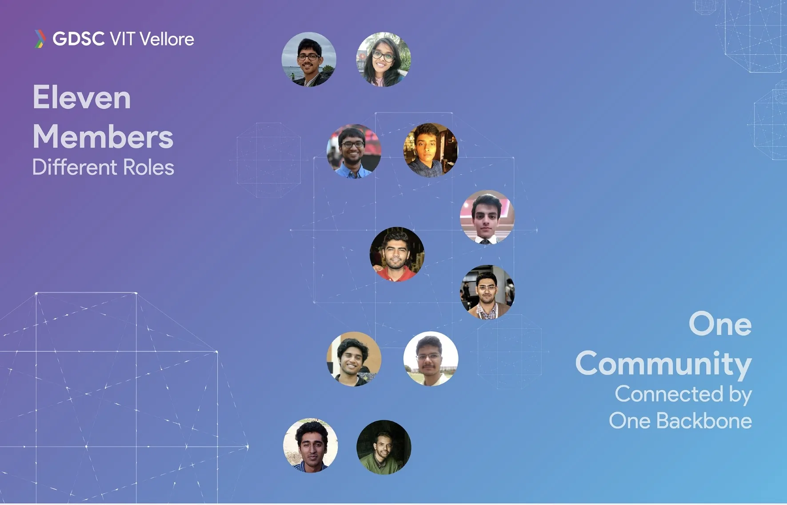
Aye good choice on the story version
Who likes being normal innit? Scroll down to go through my journey in a story format.
Scroll
Chapter 01
Long long time ago
Born in Lucknow a mischievous child moved to Gurgaon at the age of four where his interest in design was sparked… nah nah that's corny we're not going that far back.
Chapter 02
Where it all started
An enthusiastic Samarth Nayyar joined Vellore Institute of Technology in 2016 with his goals set straight, he wanted to be a web developer. The path was planned, to join the most reputed community for developers, Google Developers Student Club VIT . Well, that worked out but a week into the community he was asked to learn design tools to help the short-staffed design team.
A few days after downloading and using the tools followed by taunts of "no design sense", he fell in love with creating experiences before developing them. He asked to be permanently shifted to the design team and focused on building skills for it.


Chapter 03
Stepping into Communities
THE START
Sitting in his room getting tasks for posters and social media graphics , getting feedback from seniors, and making changes to learn would be the summary for the first 6 months. Then came the flagship event where he met all the other members and made lifelong friends.
Since that day he never skipped a meeting and started getting involved in projects with other developers and seniors to venture into the field of UI/UX and motion graphics. The next year was filled with tagging along seniors in projects to learn the processes.
ON PAPER "DESIGN LEAD"
Soon due to the commitment of senior members and as a reward for his commitment to the design team, he informally took charge of the design team handling the learning of new members and managing the branding of the whole community.
This was followed by a few UI/UX and branding projects which were led by him. Some of these projects were:
GDG VIT Vellore Organizing Team
A branding project to announce the board of GDSC VIT of 2017.
Learn MoreSEE ALLPROJECTS+SEE ALLPROJECTS+SEE ALLPROJECTS+SEE ALLPROJECTS+SEE ALLPROJECTS+SEE ALLPROJECTS+
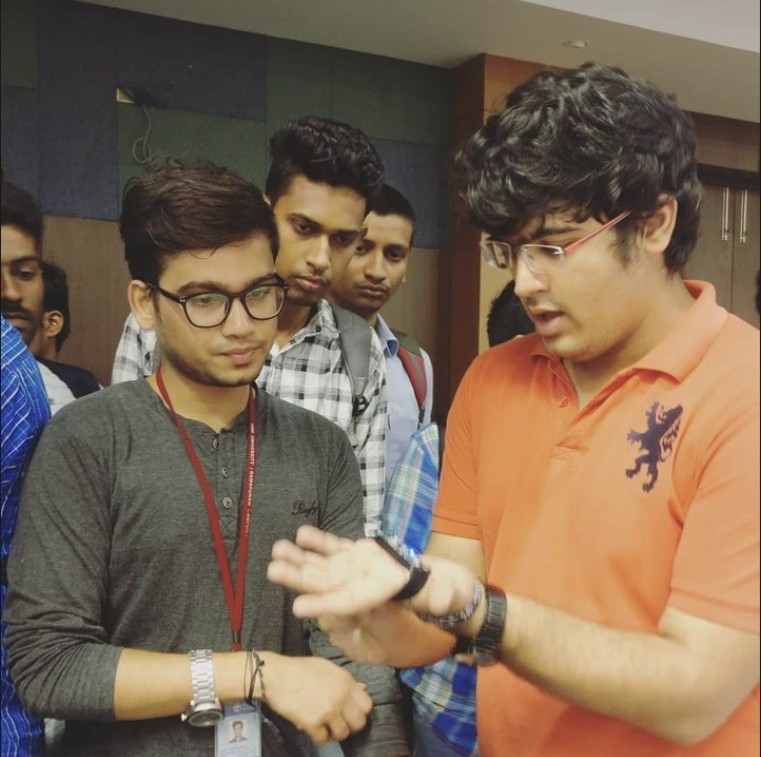
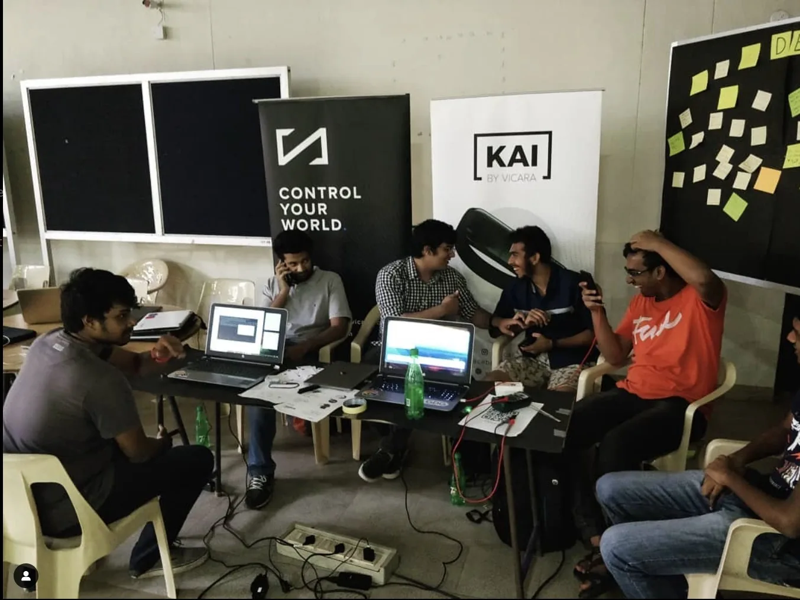
Chapter 04
Working Part Time with VICARA
During his second and third years in university after learning the basics of design from the community, he wanted to gain some industrial experience.
He joined a startup as a part-time Motion Graphics and Product Designer, where he worked for 18 months to hone his skills in the field of design. While also learned about the marketing and business side of things to combine with various people from diverse backgrounds to launch a product called KAI, which raised $100,000+ in crowdfunding on Indiegogo.

Chapter 05
Industrial Internship Experience
FIRST INTERNSHIP AT OFBUSINESS
The first year was completed and the plan was to go industrial experience as an intern at a reputed company to see how things work in the real world with time crunch and deadlines.
He joined ofbusiness in Gurgaon for a period of 2 months as a Motion Graphics and Product Designer. Helping create branding for a sub-brand and creating videos to attract investors for the next round of funding.
SECOND INTERNSHIP AT AIRTEL PAYMENTS BANK
After completing two years at the university, he had more knowledge about the field of design and wanted to get experience at a company which has a clever design team with a focus on building applications.
He joined Airtel Payments Bank for 2 months as a product designer helping them rebuild their merchant application.
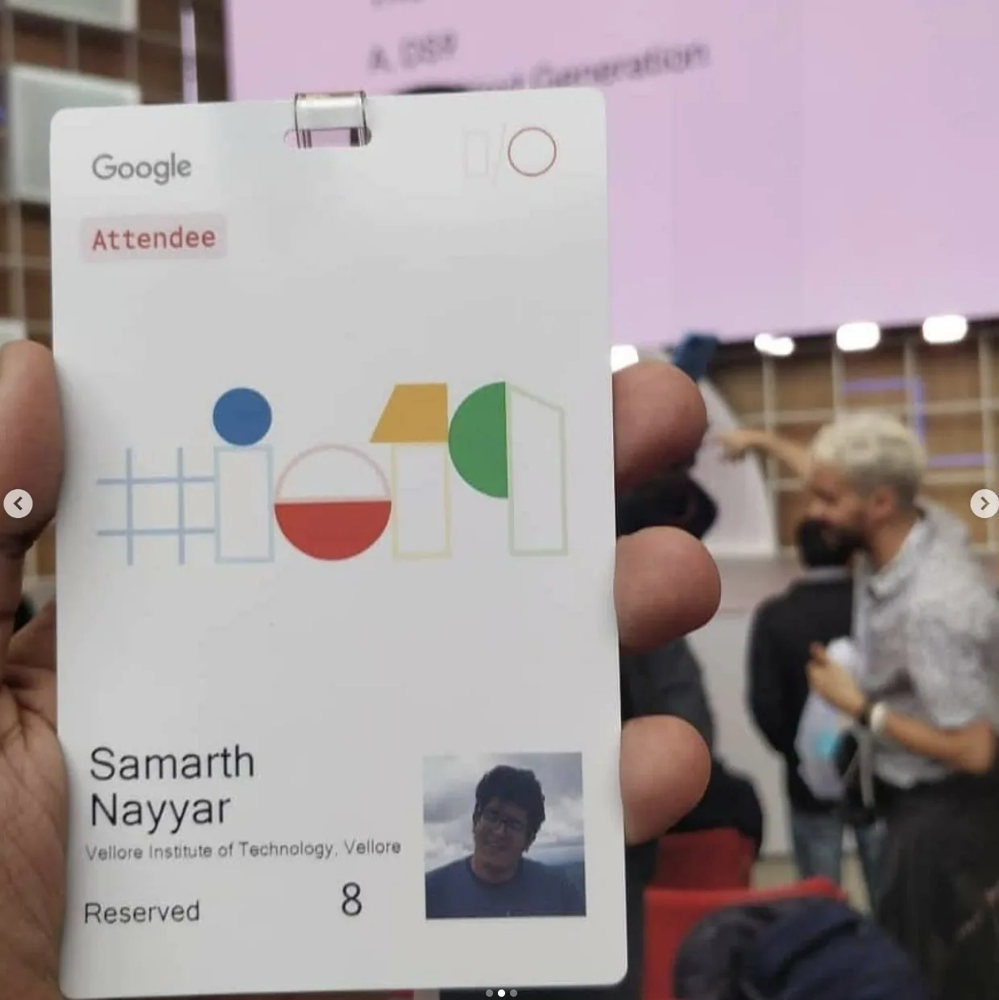
Chapter 06
Growing more with the Community
BECOMING THE COMMUNITY LEAD
After 2 years of being part of the Google Developers Student Club community, he was named as the new community lead. Responsible for guiding the community in a new direction.
Over the next 12 months, he focused on improving the community's output in events and projects. Conducting over ten events in a year.
Also working on 20+ projects in a calendar year with a few of them getting large-scale recognition due to being partnered with the University, The Local Police, The Government and NGOs. A couple of them are highlighted below:


Cultivating Hope: Empowering Adolescents Through 'Hope House'
This case study explores the collaborative project titled "Hope House," undertaken in partnership with a NGO based in Vellore.
Learn More"Election Eye" - Ensuring Secure Voting
This case study delves into the collaborative project known as "Election Eye," a groundbreaking initiative conducted in partnership with the Tamil Nadu Police.
Learn MoreSEE ALLPROJECTS+SEE ALLPROJECTS+SEE ALLPROJECTS+SEE ALLPROJECTS+SEE ALLPROJECTS+SEE ALLPROJECTS+
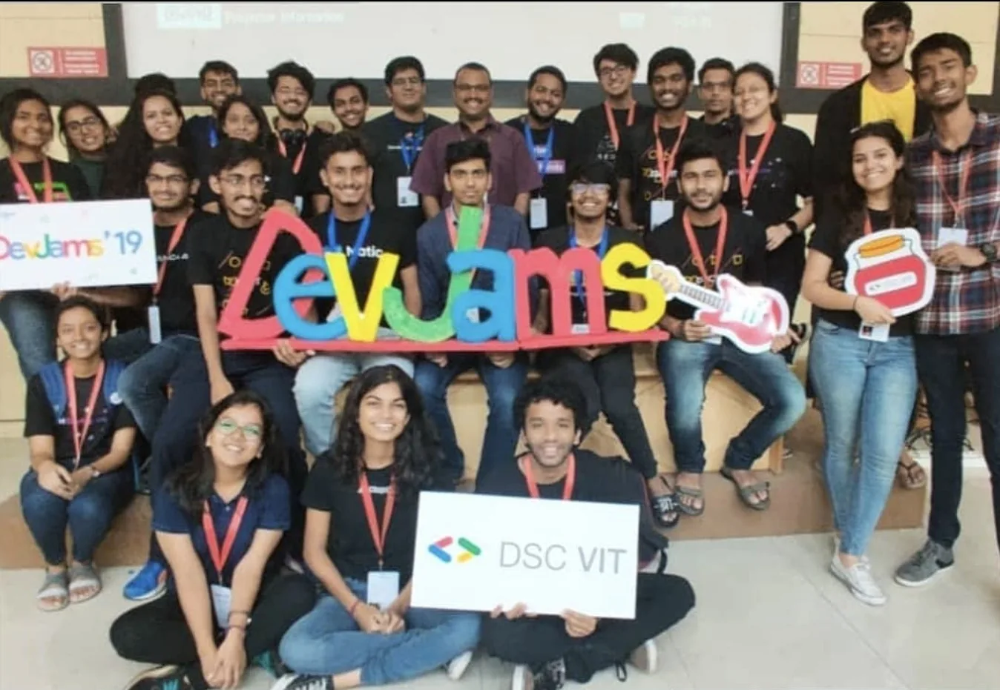
Chapter 07
BECOMING THE COMMUNITY LEAD
A few months after becoming the lead due to the community and his contributions to the Google Student circle, he was selected as one of the top 5 performing leads out of 500+ leads over the world for the year.
He was invited to attend Google I/O 2019 and visit the Google office in California. He spent 15 days in the United States sponsored by Google to learn more about communities and Google with 4 other leads.
Chapter 08
Working for the University
After 3 years of arduous work in the community, he was selected by the university for their latest project called "VIT Hack" a large-scale international hackathon and the university wanted the performing students in the university to host it.
He was selected as the Design Lead and was involved in creating a branding for the whole project from scratch while also building a design system which would be used for years to come by the university.
Coming together with 8 other people who were the best in their field, they conducted a Hackathon unlike any other in the university. People from 10+ countries, 20+ speakers, multiple events, and 2 days of continuous product building.
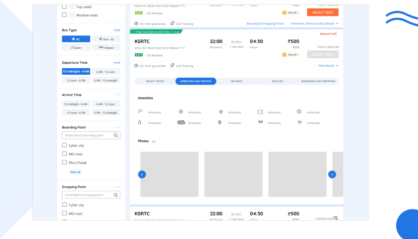
Chapter 09
Moving into the Professional World
INTERNSHIP AT MAKEMYTRIP (GOIBIBO)
While in the second last semester of undergraduate, the search for an internship during the semester started and a list of about ten companies was made to target.
The aim was to get experience in a company whose design team and culture inspired him. One of those companies was MakeMyTrip and after a few interviews, he was given an opportunity to work as a Product Design Intern in the Bus and Cabs department.
He worked on improving the visual identity of the cabs product and re-imagining the user flows for booking buses to make it easier for the users reducing customer failure rates.

Chapter 10
Making the most out of Breaks
FREELANCE AT WINUALL
During his break after his internship at MakeMyTrip, he has a short stint as a freelance Product Designer at Winuall. He was responsible for creating a contemporary design system and branding for the product, then incorporating it into their admin and student products.
Chapter 11
Successfully a Full Time Product Designer
2 YEARS AT PAYTM AND PAYTM INSIDER
After his internships, he moved into a full-time role as a Product Designer at Paytm Insider. His role here was to build design systems for the new products launched during covid to help the company make the best out of the digital space. Read more about the projects below:


(02)
Paytm Insider
0 to 50,000 paying users in one month
Design Systems0→1A/B TestingResearchUX Design
Open
Paytm Chat
Chat and payments in one thread, right on Paytm's homepage. Send texts, photos and money to friends, split a group bill by sliding pizza slices, and react to every payment with custom stickers, all built from scratch in one of India's most regulated spaces.
Learn MorePayTM Insider Vibes
The ultimate social platform where you can build and join vibrant communities of like-minded individuals. Engage in meaningful discussions, earn experience levels, and even participate in exciting community events through polls.
Learn MoreSEE ALLPROJECTS+SEE ALLPROJECTS+SEE ALLPROJECTS+SEE ALLPROJECTS+SEE ALLPROJECTS+SEE ALLPROJECTS+
Chapter 12
Time to get Education in Design
4 internships, 1 full-time position, multiple freelance projects, and 2+ years of experience in designing. He decided it was time to get educated and clear the concepts about the cores of designing.
He applied to a few top universities for a Master's in the field of UX Design and got selected by the University of Texas at Austin.
Chapter 13
Getting Part Time Experience
During his first semester and second semester he has been getting part-time experience as a Graphic Designer for a department at the university. Learning about the culture and work style of a different country while also adding Graphic Design experience to his arsenal.
Chapter 14
Summer Internship at ThinkQ AI
During my summer internship at ThinkQ AI in Dallas, Texas, I had the opportunity to make a significant impact on the user experience (UX) of our product. Over the course of four months, I worked remotely to implement UX flows that transformed early-stage ideas into tangible solutions.
One of my key achievements was overhauling the design system, setting the stage for alpha testing with potential customers. Throughout the internship, I honed my skills in wireframing, user interface design, and tools like Figma and After Effects, while also contributing to graphic design, UX, and web design projects. It was an exciting and rewarding experience that allowed me to apply my UX design skills in a real-world context.
Chapter 15
Capstone Project at Carolinas Psychiatric Institute
Soon to graduate and during my final semester as University of Texas at Austin I joined Carolinas Psychiatric Institute as a Product Designer to help merge the gap between Artificial Intelligence and Medical Practitioners. Responsible for creating a design system that embodies trust with professional looks to help onboarding doctors onto the platform to build a community where medical professionals can help each other help the world around them.
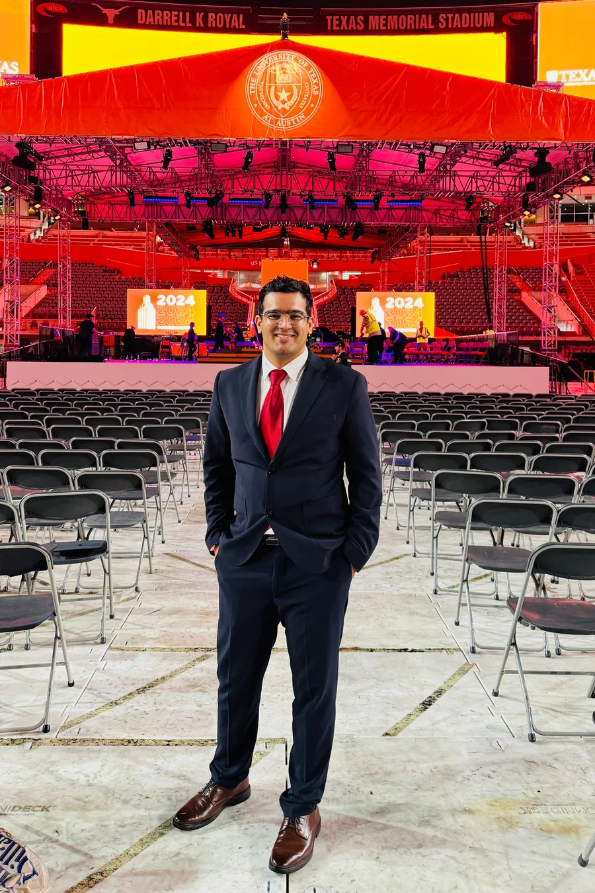
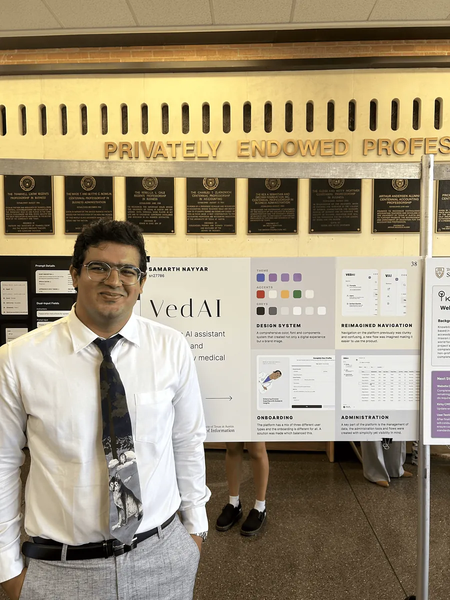
Chapter 16
Graduating an Experience
UNIVERSITY OF TEXAS AT AUSTIN
Spending two years at UT Austin completing projects and research papers which align to my vision of UX solving daily problems. Building my expertise in design systems and growing into a designer with much more process and business understanding to his arsenal.
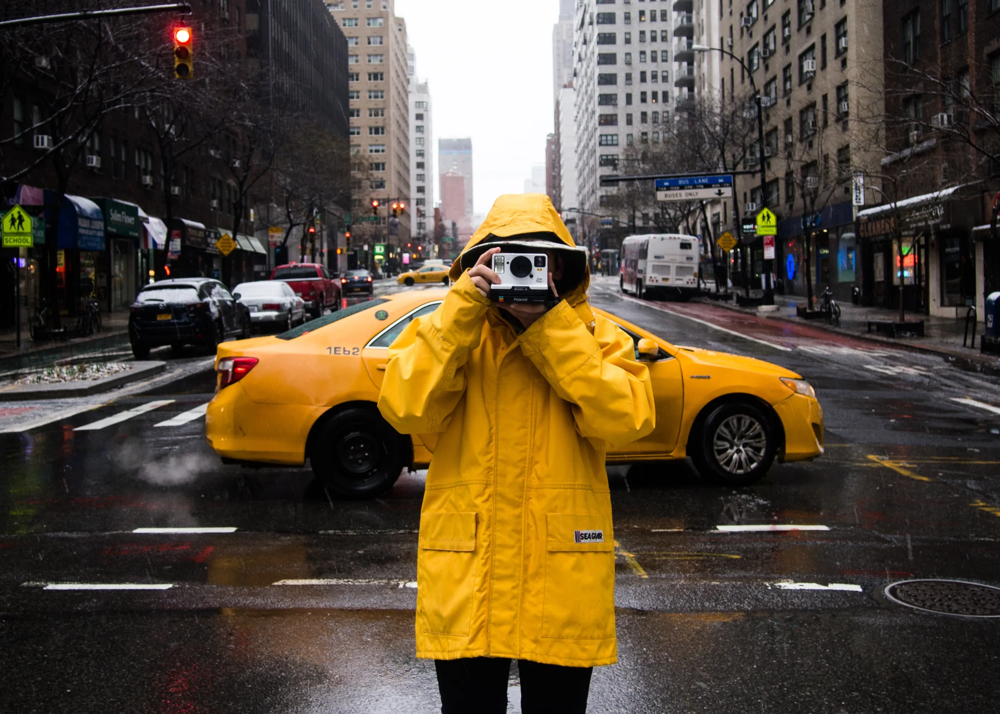

(13)
Divergent Minds, Convergent Designs
Research paper: do designers and everyday users see the same problems?
UX ResearchResearch Paper
Open
Snapshot
A camera that coaches you while you shoot, not after. Templates, pose guidance and live feedback built from 10 interviews and a survey, lifting usability (SUS) from 76 to 82.
Learn MoreDivergent Minds, Convergent Designs
A research paper testing the "faster horses" myth. Eight people across four backgrounds reviewed the same screens, showing how artistic training and industry experience shape what we notice in a design.
Learn More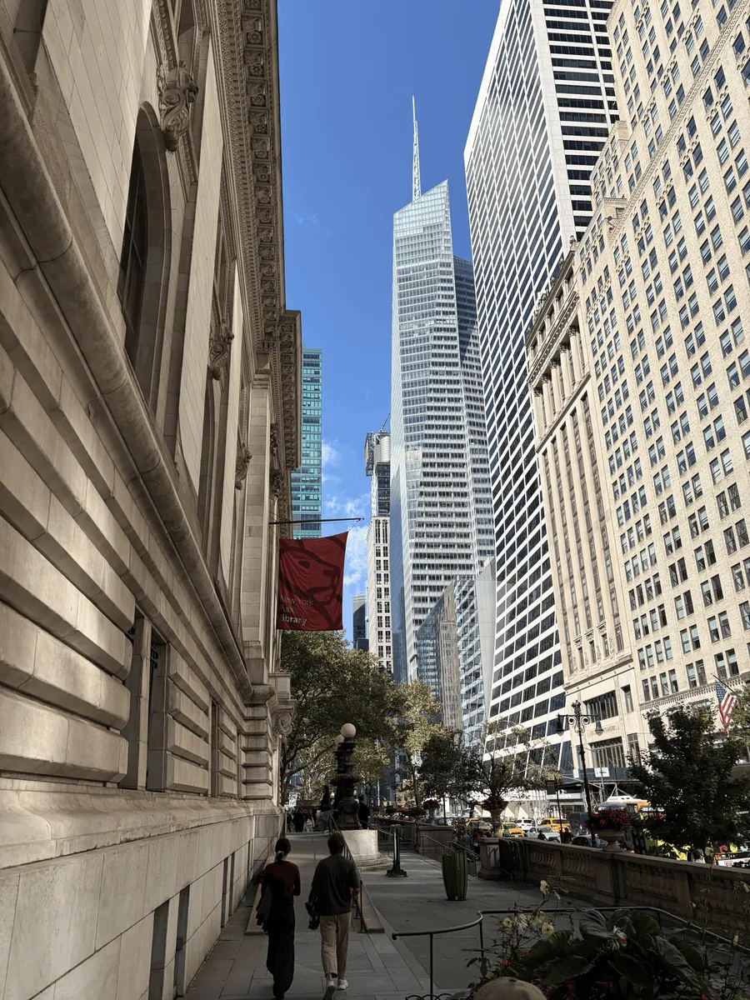
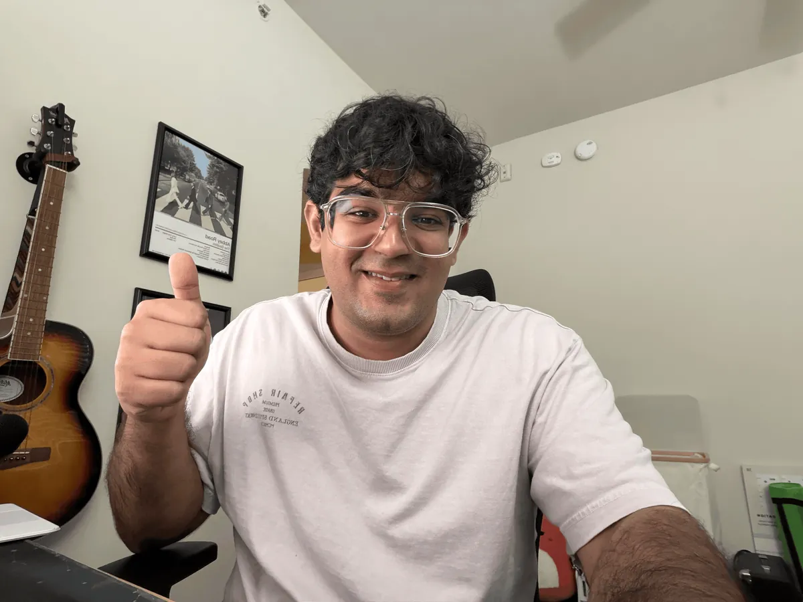
Chapter 17
Growing in the professional work
BLINK UX
Moving into the ‘corporate america’ world stepping into a role which is very different from my previous product focus roles. This brought new processes to learn and new challenges to solve; working on the systems behind designs is a big focus building design systems to help the organization ship faster AND better. Revenue is a big metric and AI is the new age; becoming a specialist in designing with AI and being the guide for the AI has been a focus!

Blink UX
Voyage, an AI-native design system built from zero and adopted by 5 teams and 50+ designers. It halved design turnaround and powers the demos behind $100M+ in enterprise deals.
Learn More
Chapter 18
What's next?
The story has just started, what's next? Would you like to add to the story? Check out all the projects, case studies and extra design stuff below:
PROJECTS AND CASE STUDIES
You can also download these for offline use:
Want to add to the story? Reach out at contact@samarthnayyar.com